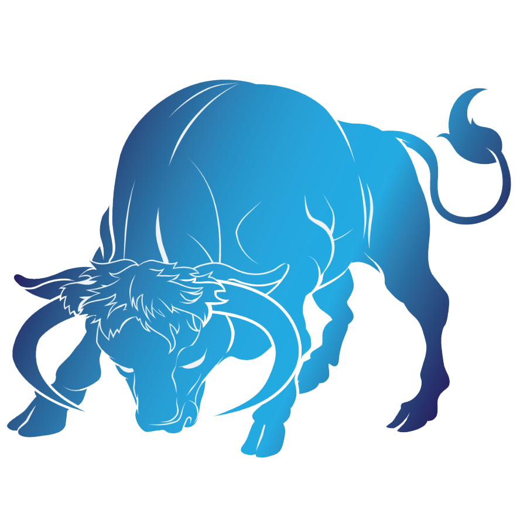
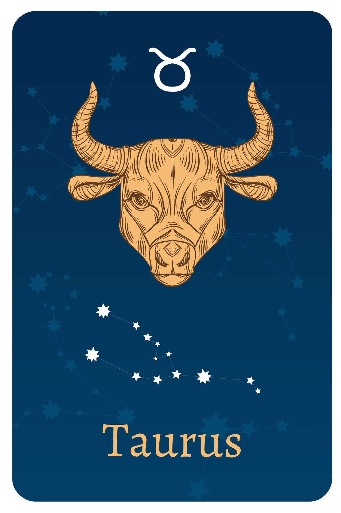

- Date Range : April 20 - May 20
- Element : Earth
- Color : Pink
- Quality : Fixed
- Day : Friday, Monday
- Ruling planet : Venus
- Ruling house : Second
- Lucky number : 2, 6, 9, 12, 24
- Lucky gem : Emerald
- Top love Matches : Cancer, Virgo
TAURUS (April 20 - May 20)

Taurus Personality Traits
Strengths : Reliable, patient, practical, devoted, responsible, stable
Weaknesses : Stubborn, possessive, uncompromising
Taurus likes : Gardening, cooking, music, romance, high quality clothes, working with hands
Taurus dislike : Sudden changes, complications, insecurity of any kind, synthetic fabrics
Taurus is a practical and well-grounded zodiac sign that values the fruits of their labor. They have a strong desire to be surrounded by love and beauty, and are drawn to the material world and physical pleasures.
Individuals born under this sign are sensual and tactile, placing
great importance on touch and taste as their primary senses. They
are also known for being stable and conservative, making them one of
the most dependable signs of the zodiac. Taurus individuals are
committed to their choices and will endure until they reach a point
of personal satisfaction.
Taurus is an Earth sign, Like Virgo and Capricorn. Taurus has a
grounded, practical, and realistic perspective. They have a talent
for making money and sticking with long-term projects until
completion. Their determination and commitment are often mistaken
for stubbornness, but they simply have a strong sense of
responsibility. Taurus makes great employees, long-term friends, and
partners, as they are always there for the people they love.
However, their earthly nature can also make them overprotective,
conservative, or materialistic at times, as their views of the world
are influenced their desire for financial stability.
Taurus Love Style
Ruled by Venus, a Taurus in love is sensual to the max and very connected to their physical bodies. A Taurus must feel physical attraction from the start if a romance is going to take off. But those who want to seduce Taurus first have to get past the formidable external barriers this sign places in front of them. Bulls won't let anyone see their inner life, and they may seem a little formal and standoffish until you prove your true worth.
Rather than flirting, Taurus prefers a real conversation to trading
pleasantries or jokes. And forget about trying to figure out what
Taurus wants you to say. This sign senses when you're not being
genuine, and nothing is more of a turn-off.
But even though Taurus may seem when you meet in a social setting,
all bets are off behind closed doors. Sensual Taurus connects best
via physical sensations, and is all about pushing boundaries when
they're with someone they trust.
Taurus' Friendship Style
"Friends forever" is a cliché probably dreamed up by a Taurus. When it comes to friendship, once you're in with a Bull, you're in for life. Bulls aren't just loyal, they're also fun, with a witty streak that always keeps you laughing. They don't take friendship lightly, and remember birthdays, anniversaries, and other key events, often with a card or gifts. But it can be tough to get into a Taurus' inner circle. For one, they can be suspicious of outsiders, and may assume that someone has an agenda. Be honest with Taurus—they hate lies (even "you look amazing" white lies) and are suspicious of people who flatter them too much. Be real—disagreeing (respectfully!) with a Taurus and prompting a debate can go a long way toward becoming BFFs.
Three reasons why Taurueans make great friends
- Unflappable Taurus will help manage any crisis. Whether it's a breakup or a family shakeup, the Bull is there for you, making sure your fridge is full and your Netflix queue is orderly, leaving you to concentrate on the task at hand.
- Even if you've messed up, Taurus won't leave your side. And this sign is above drama. If there's any gossip swirling around you, trust that Taurus is keeping out of the fray.
- A Taurus is all about details. Don't be surprised if your Taurean friend remembers your dog's birthday—and provides a card and candles.
Taurueans are amazing! Their name says it all:
T for trailblazing
A for ambitious
U for unwavering
R for reliable
U for understanding
S for stable
Taurus career, money & success traits
Taurus' greatest career strength: Persistence. A Taurus will look at a project, break it down into steps, and get things done, even if it means burning the midnight oil. Taurus never utters the words "too busy" and quickly becomes a cherished member of any work team.
Taurus' greatest career challenge: Respecting authority. A Taurus will go the extra mile—if they believe in the project. But if they don't like a project or a manager, they'll dig in their heels and get things done, but with some side-eye and shrugged shoulders. Bulls need to learn that, even if the project isn't managed the way they think it should be, following a boss's orders is all part of the process.
Taurus individuals are known for their love of money and their
willingness to work hard to earn it. They are reliable, hardworking,
patient, and thorough in both employee and leadership roles. Once
they focus on a specific project, they will firmly stick to it,
regardless of external distractions. Stability is a key factor in
their work routine. They seek material pleasures and rewards to
build their own sense of value and achieve a luxurious yet practical
way of life. For Taurus individuals, their job is a means to this
end.
Taurus is a well-organized zodiac sign when it comes to
finances, and they prioritize paying all of their bills on time.
They take responsibility for their pension and save money for a
rainy day. They can make do with a small or large salary equally
well. Suitable occupations for Taurus individuals include
agriculture, banking, art, and any career that requires culinary
skills.

Motto
"Nothing worth having comes easy."
Famous Taurus

David Beckham
(Professional footballer)
May 2, 1975
Taurus
May 2, 1975
Taurus

Robert Pattinson
(Actor)
May 13, 1986
Taurus
May 13, 1986
Taurus

Adele
(Singer)
May 5, 1988
Taurus
May 5, 1988
Taurus
Join Our Daily Overview
Your Astrological overview guides you on what to look out for and how to act in tune with the stars and planets each day.
Was this page helpful?
Do not selling My personal info!
© Copyright-2023 -All right reserved.